Belt Tracks (Four), Track Contact Point Cloud
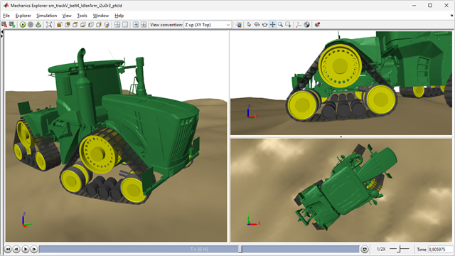
(return to Tracked Vehicle Model with Simscape Overview)
This example models a tracked vehicle with a rubber belts for tracks. Contact between the track and the ground is modeled using a point cloud on each segment of the belt. The track can be tested on uneven terrain or a slope. Contact forces are modeled using the Spatial Contact Force block.
The track can be tested on uneven terrain, slope, and a flat plane. The sprocket is driven with a flexible driveshaft. The chassis is articulated so that it can turn corners
Contents
Model
In this example, four tracks are modeled along with the chassis.
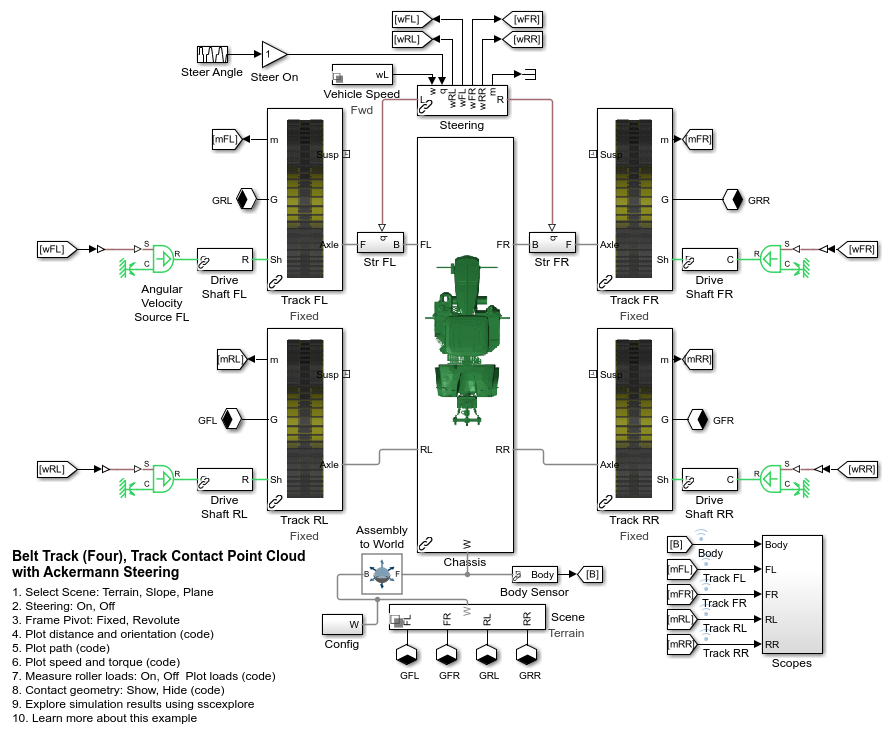Track Subsystem
The track is composed of the undercarriage and the belt segments connected into a loop. The undercarriage contains the rollers, sprocket, and two idlers. Everything is rigidly attached to the frame except one idler which is attached to an arm which is pushed against the belt to hold it in tension. These exert forces on the belt through two sets of contact forces.
1. The belt lugs press against the sprocket pins
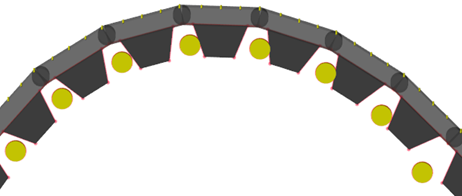
2. The belt carcass rolls along sprocket and roller surfaces
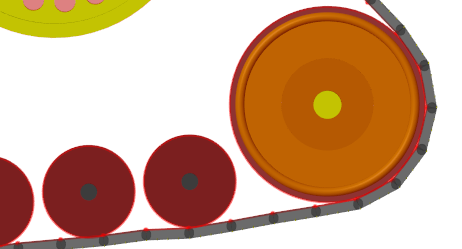
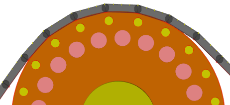
The Planar Track joint positions one of the belt lugs at a gap between the sprocket pins which is positioned facing straight down. Joint targets applied to the track segments helps it to mesh with other pins on the sprocket and loosely wrap around the rollers and idler. The block Transform Half Seg Angle orients the interface frame so that the two chain segments attached to that pin will wrap around the sprocket.
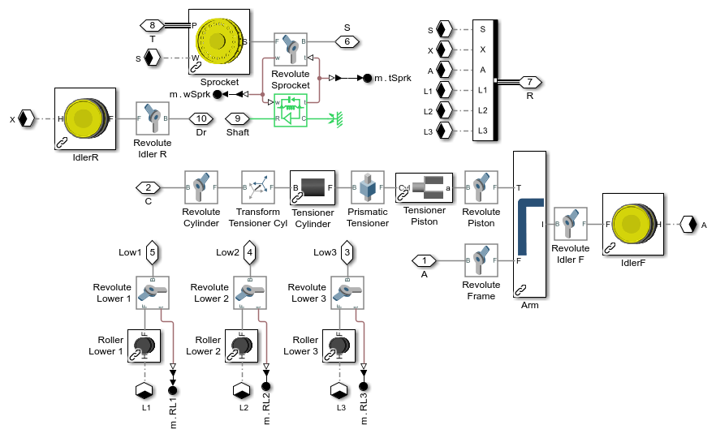Track Subsystem
A set of track segments are joined using Revolute Joints to model the track. The joints are contained in each segment. Joint targets are assigned in the mask to ensure the track meshes with the sprocket and wraps loosely around the rollers and idler.
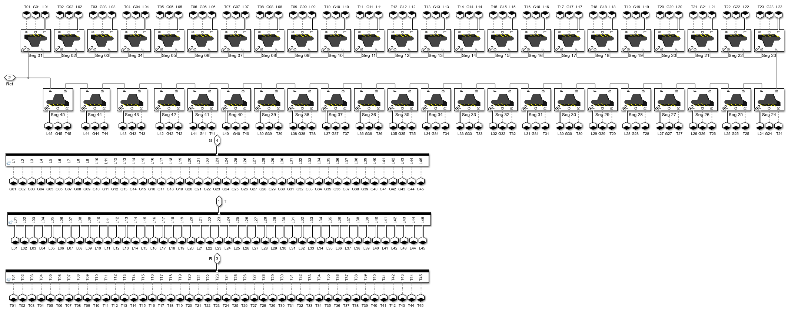Belt Segment Subsystem
Each belt segment is composed of the carcass and lug. To streamline the contact force calculation, simpler geometry is connected to the Spatial Contact Force block.
- Disk geometry is used to model the pins in the sprocket.
- Line Segment geometry are used to model the lugs and inner carcass surfaces.
- Point Cloud geometry is used to model the outer carcass surface.
The point cloud for the belt-ground contact is parameterized, so the point locations and density can be varied.
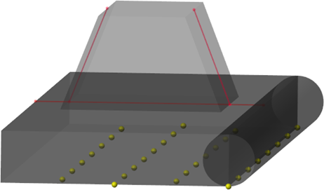
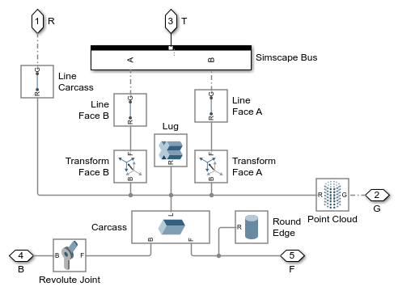Steering Subsystem
Ackermann steering angles are calculated based on the steering input, wheelbase, and distance between the tracks. The difference in speed based on no-slip travel is also calculated to help the tractor drive in a circle at the target turning radius.
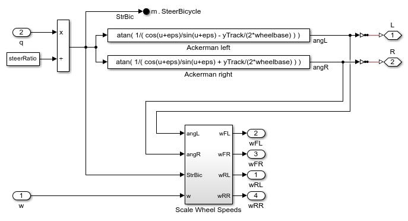Simulation Results: Terrain Test
Below are the simulation results from a test where the track is driven over a hilly terrain. The terrain is defined using the Grid Surface block. An STL file was imported and interpolation was used to create a regular grid composed of 100x100 points.
Elapsed Sim Time = 9931.2613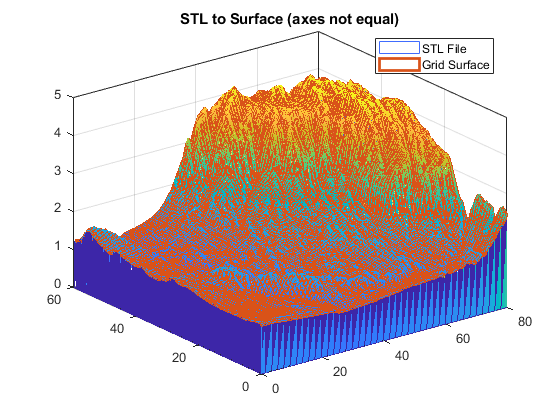 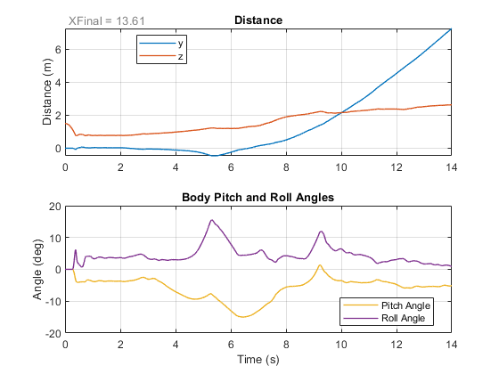 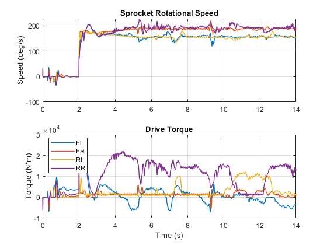 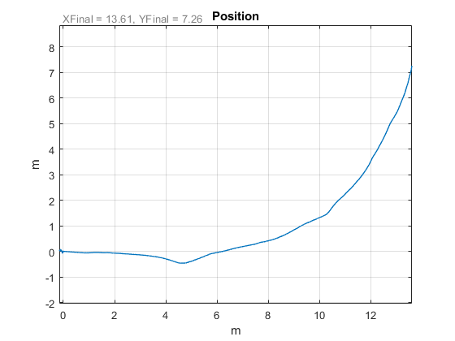